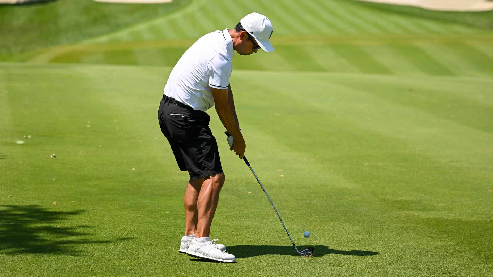
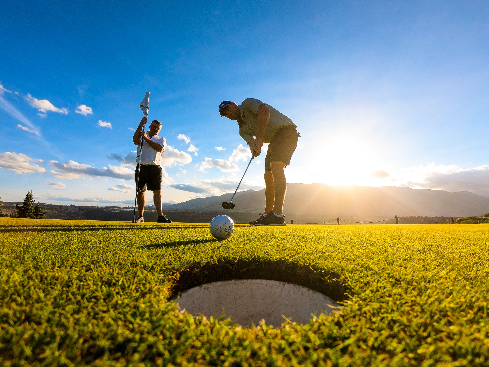

Информация о Гольфе

Гольф — это вид спорта, который играется на специальных полях, называемых гольф-полями, с целью отправить мяч в отверстие с наименьшим количеством ударов. Гольф считается одним из самых старых и традиционных видов спорта, который имеет свои корни в Шотландии и Ирландии. Этот вид спорта популярен по всему миру и часто ассоциируется с элегантностью, спокойствием и стратегическим мышлением.
Вот основные аспекты гольфа:
Поле:
Гольф-поле представляет собой пространство с разнообразным рельефом, включая газоны, бункеры (песчаные ловушки), препятствия в виде водных водоемов и другие естественные особенности.
Отверстие:
Гольф-поле состоит из нескольких отверстий. Каждое отверстие представляет собой маленькую зону, в которую игроки должны отправить мяч.
Мяч:
Игроки используют специальные мячи для гольфа, которые обычно имеют текстурную поверхность для лучшего контроля в полете.
Клюшки:
Для игры в гольф используются разнообразные клюшки с разными характеристиками. Различные типы клюшек предназначены для различных ситуаций, например, для дальних ударов или ударов с низкой точностью.
Удары:
Игроки отправляют мяч клюшкой в сторону отверстия. От зависит от типа удара и текущей ситуации на поле. Существуют различные удары, такие как драйв (длинный удар), аппроуч (удар с небольшой дистанции), путт (удар с короткой дистанции) и другие.
Правила и счет:
Цель игры — отправить мяч в отверстие с наименьшим количеством ударов. Количество ударов за отдельное отверстие определяет счет игрока. Выигрывает игрок, набравший наименьшее количество ударов по всем отверстиям.
Гольф-удары:
Возможные ситуации в гольфе включают "бирди" (1 удар меньше стандартного для отверстия), "богей" (1 удар больше стандартного) и другие термины, которые отражают результат удара.
Турниры и соревнования:
Гольф имеет разнообразные турниры и соревнования, как для профессиональных игроков, так и для любителей. Одним из самых престижных турниров в мире гольфа является Мастерс, который проводится в США каждый год.
Гольф — это не только физический спорт, но и интеллектуальная игра, требующая от игроков точности, стратегического мышления и управления эмоциями.
советы

Стать гольфистом требует наличия терпения, усердной практики и развития навыков. Вот несколько шагов, которые помогут вам начать свой путь в мире гольфа:
Изучите основы:
Ознакомьтесь с правилами гольфа, терминологией и основами игры. Можно начать с чтения книг, просмотра видеоуроков и изучения информации в сети.
Посещение поля:
Посетите местное гольф-поле, чтобы оценить атмосферу и визуально представить, как выглядит игра. Некоторые поля могут предоставить начинающим гольфистам возможность попробовать пару ударов.
Обучение у профессионалов:
Лучше всего начать обучение под руководством опытного профессионального тренера. Тренер поможет вам освоить правильную технику ударов, понимание игровой стратегии и другие аспекты игры.
Аренда оборудования:
Перед покупкой собственного оборудования рекомендуется взять в аренду клюшки и мячи для начальных тренировок. Это позволит вам попробовать гольф без значительных инвестиций.
Тренировки:
Уделяйте регулярное время тренировкам. Практика игры на поле, ударов на дальнюю и короткую дистанцию, путтингу и другие аспекты игры помогут вам развивать навыки.
Знакомьтесь с этикетом:
Гольф имеет свои традиционные правила поведения и этикета на поле. Ознакомьтесь с ними, чтобы чувствовать себя уверенно в гольф-сообществе.
Участие в соревнованиях:
Как только вы начнете овладевать основами, попробуйте участвовать в небольших аматорских турнирах. Это даст вам опыт игры в реальных условиях соревнования.
Развивайте физическую форму:
Гольф требует хорошей физической подготовки. Разрабатывайте выносливость, гибкость и силу, чтобы справляться с долгими прогулками по полю.
Постоянство:
Гольф — это игра, в которой совершенствование навыков занимает много времени. Будьте готовы к неудачам и не останавливайтесь на достигнутом.
Общение с другими гольфистами:
Взаимодействие с опытными гольфистами может быть очень полезным для вашего развития. Вы можете получить советы, делиться опытом и обогащать свои знания.
Помните, что гольф — это увлекательный и требующий выдержки вид спорта. С течением времени и практики вы сможете достичь уровня, на котором сможете наслаждаться игрой и улучшать свои результаты.